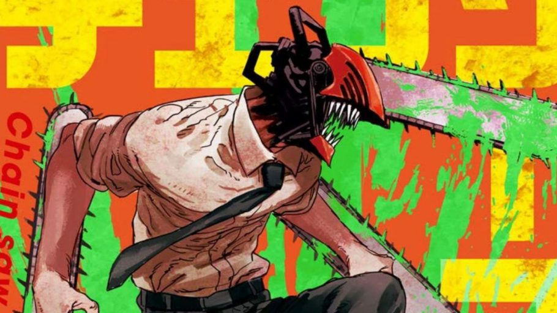
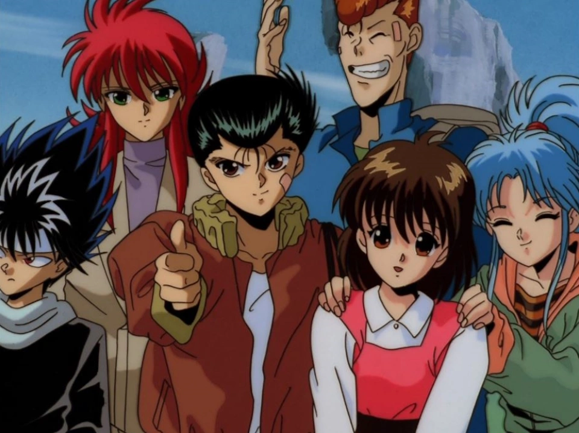
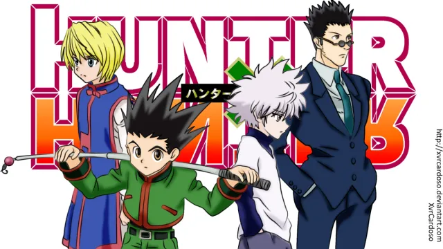

Fullmetal Alchemist: Brotherhood

Status: concluído
Gênero: shōnen
Segundo anime inspirado no mangá Fullmetal Alchemist, esta é a versão mais fiel à espetacular história contada nos quadrinhos. Edward e Alphonse Elric são dois jovens alquimistas. Quando ainda eram crianças, eles tentaram usar alquimia para trazer sua mãe de volta à vida. Como consequência da tentativa mal sucedida, Ed acabou perdendo um braço e uma perna, já Al precisou que sua alma fosse armazenada em uma armadura para que ele sobrevivesse.
Para reverter a situação, os dois procuram pela Pedra Filosofal, artefato que permite o rompimento da regra de troca equivalente da alquimia. Enquanto peregrinam por Amestris, seu país, os dois acabam descobrindo uma conspiração capaz de abalar todo o seu mundo. De tirar o fôlego, Fullmetal Alchemist: Brotherhood é daqueles animes que deixam saudade quando terminam e que você, com certeza, irá querer ver mais de uma vez. O anime recebeu a incrível nota 9,1 no IMDb. Está disponível na Netflix Brasil.
Chainsaw Man
Status: em produção
Gênero: shōnen, ação, comédia de horror, fantasia sombria
Desde que os primeiros episódios deste anime foram lançados, entre 2018 e 2020, os fãs aguardavam ansiosamente pela chegada da segunda temporada. Para satisfação dos expectadores, os novos capítulos estrearam em 2022 e fizeram ainda mais sucesso que a primeira temporada. A produção do estúdio MAPPA acompanha Denji, um jovem que vê sua vida mudar após tentar pagar uma dívida que seu falecido pai tinha com a Yakuza.
Denji acaba sendo morto durante a negociação, mas é trazido de volta à vida por um demônio motosserra, que se une ao corpo do garoto e o transforma num híbrido de humano e demônio. A partir daí, Denji pode transformar seu corpo em uma arma letal, o Chainsaw Man, como ficou conhecido. Ele passa a trabalhar junto a caçadores de demônios para enfrentar ameaças. Considerado um dos melhores animes do gênero dos últimos anos, a produção conquistou um 8,5 no IMDb.
Demon Slayer: Kimetsu no Yaiba

Status: em produção
Gênero: shōnen
Desde sua estreia em 2019, Demon Slayer vem garantindo sua presença em listas de melhores animes, mantendo a excelente nota 8,7 no IMDb. A trama nos apresenta a Tanjiro Kamado, um jovem que perdeu quase toda a sua família no massacre que um demônio fez a sua vila. Apenas sua irmã mais nova, Nezuko, sobreviveu, mas foi transformada em um demônio. Misteriosamente, Nezuko manteve sinais de emoção e sentimentos humanos.
A partir daí acompanhamos a trajetória de Tanjiro para se tornar um caçador de demônios e integrar a Demon Slayer Corps, encontrar uma cura para Nezuko e vencer o Rei dos Demônios. Com excelentes avaliações do público e da crítica, o anime narra a história de outros caçadores, companheiros e professores de Tanjiro.
Attack on Titan

Status: em exibição
Gênero: shonen/seinen
Com nota 8,8 no IMDb, sem dúvida, este é um dos animes mais aclamados dos últimos tempos! Baseado no mangá shonen criado por Hajime Isayama, Attack on Titan conta a história de um mundo devastado pelo ataque de gigantes que devoraram grande parte da população da Terra. Um grupo de sobreviventes vive isolado no interior de uma grande muralha. Com a paz do local ameaçada, Eren Jaeger, um jovem com "habilidades especiais", reúne um exército com a missão de destruir as aterrorizantes criaturas. Mas as descobertas no caminho são de tirar o fôlego do espectador.
Atenção, este não é um anime para quem tem "estômago fraco"! Cenas com decapitações e pessoas sendo desmembradas pelos titãs estão em quase todos os episódios. Mas, Attack of Titan não traz violência gratuita, como muita gente deve imaginar. O sangue não é o destaque deste anime, mas apenas um artifício para mostrar como a vida humana pode ser frágil...
Yu Yu Hakusho
Status: concluído
Gênero: shōnen
Yu Yu Hakusho é um dos clássicos animes da década de 1990 que precisa ser visto! Mesmo depois de tanto tempo de seu lançamento, o anime segue com a excelente nota de 8,4 no IMDb. Baseado no mangá escrito e ilustrado por Yoshihiro Togashi, Yu Yu Hakusho conta a história de Yusuke Urameshi, um jovem delinquente que morre ao tentar salvar a vida de uma criança.
Como a seu sacrifício não estava sendo esperado pelos governantes do submundo, estes decidem por reviver Urameshi para que ocupe o cargo de detetive sobrenatural, enquanto avaliam se o rapaz merece ir para o paraíso ou inferno. Assim, ele passa a investigar casos envolvendo demônios e fantasmas que invadem o mundo dos vivos.
Hunter x Hunter
Status: concluído
Gênero: shōnen
Hunter x Hunter é outro título imperdível e uma ótima dica para quem quer mergulhar no mundo dos animes. Com roteiro de Tsutomu Kamishiro, esta animação está dividida em duas séries: a primeira lançada entre 1999 e 2001, e a segunda entre 2011 e 2014. Vamos falar aqui sobre a segunda versão do anime, considerada a mais completa, uma vez que traz a adaptação de todos os arcos vistos no mangá. Um clássico atemporal, Hunter x Hunter (2011) tem a excelente nota 8,9 no IMDb.
O universo criado por Yoshihiro Togashi é muito rico, com um sistema de magia único (através do uso do Nen, que é a energia da própria aura, basicamente) e com uma mitologia bastante característica. Cada arco de Hunter x Hunter é como se fosse um anime a parte, com temáticas diferentes e inclusão de personagens exclusivos
Mesmo que o espectador ainda esteja acompanhando a trajetória de Gon Freecss, o protagonista, e seus amigos em busca de descobrir o que é ser um Hunter, o enredo não é inteiramente fechado nesse núcleo. Além disso, a trama dá abertura para a discussão de temas polêmicos e reflexivos sobre a humanidade, como o preconceito, a desigualdade, a pobreza, a família, entre outros.